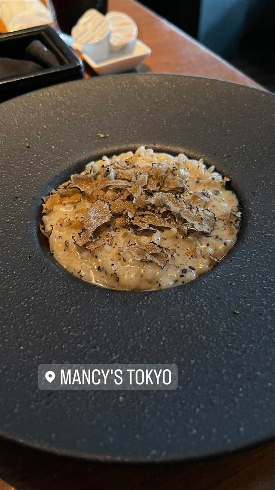
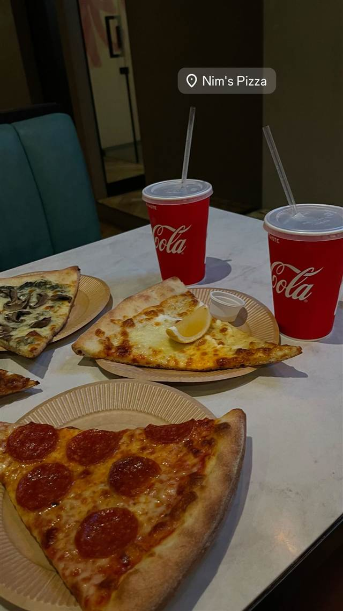

浪花家総本店
「およげ！たいやきくん」のモデル店とされる一丁焼きたい焼き
浪花家総本店
1909年創業、麻布十番の老舗たい焼き店。鯛形の型に1匹ずつ生地とあんを入れて焼く「一丁焼き」を守り続け、童謡「およげ！たいやきくん」のモデル店としても知られる、東京を代表するたい焼きの名店。
TRIVIA
豆知識
- 昭和のヒット曲「およげ！たいやきくん」のモデル店といわれる
- 店名は初代の出身地「浪花（大阪）」に由来する
- たい焼き発祥の店ともいわれ、創業から100年以上一つずつ手焼きを続けている
REVIEWS
世間の評判
3.78食べログ
薄皮香ばしいたい焼きと行列
- 薄皮で香ばしく焼かれた生地と甘さ控えめのあんこが評価されている
- 1個200円で麻布十番では破格の値段という声が口コミに多く挙がる
- 繁忙時には焼き上がりまで1時間ほど待つこともあるという声もある
- きびきびとした手際の良い接客を評価する声が複数寄せられている
食べログ 口コミ2785件
| 創業 | 1909年（明治42年）創業 |
|---|---|
| 系譜 | 人形町「柳屋」、四谷「わかば」と並ぶ“たい焼き御三家”の中で最も歴史が古い店とされる。現存するたい焼き店では最古とも言われる。 |
| 看板 | たい焼き |
| こだわり | 鯛の形の型一つひとつに生地とあんを入れて1匹ずつ丁寧に焼き上げる「一丁焼き（天然もの）」。パリッと香ばしい薄皮と、あんこの甘さのバランスにこだわる。 |
| どこから | 都心 |
| 行くなら | 行列 |
| 営業時間 | 月 11:00-19:00 火・水 休み 木〜日 11:00-19:00 |
| 定休日 | 火曜・第3水曜 |
| 場所 | 麻布十番 東京都港区麻布十番1-8-14 |
| メモ | 店頭でたい焼きが焼き上がる様子を眺められる。行列ができることが多い。 |
食べたもの：たい焼き店の店頭
OFFICIAL
店からの知らせ
NEARBY
近い店・同じ系統の店
-
 パスタ 麻布十番
Grill & Pasta es 麻布十番
六本木Ajitoの姉妹店、特製グリルで焼く牡蠣グラタン
昼 ¥1,000～¥1,999 夜 ¥4,000～¥4,999
パスタ 麻布十番
Grill & Pasta es 麻布十番
六本木Ajitoの姉妹店、特製グリルで焼く牡蠣グラタン
昼 ¥1,000～¥1,999 夜 ¥4,000～¥4,999
-
 ピザ 麻布十番
ピッツェリア ロマーナ ジャニコロ
サバティーニで20年修業した店主が焼くローマ風薄生地ピッツァ
夜 ¥5,000～¥5,999
ピザ 麻布十番
ピッツェリア ロマーナ ジャニコロ
サバティーニで20年修業した店主が焼くローマ風薄生地ピッツァ
夜 ¥5,000～¥5,999
-
 ピザ 麻布十番
SAVOY クラシック
アメリカン風ピザ全盛の時代に本格ナポリピッツァを日本に広めた先駆け的存在
昼 ¥1,000～¥1,999 夜 ¥2,000～¥2,999
ピザ 麻布十番
SAVOY クラシック
アメリカン風ピザ全盛の時代に本格ナポリピッツァを日本に広めた先駆け的存在
昼 ¥1,000～¥1,999 夜 ¥2,000～¥2,999
-
 イタリアン 六本木一丁目
キャンティ 飯倉片町本店
1960年開業、大葉を使うバジリコパスタの元祖とされる日本のイタリア料理店の草分け
昼 ¥8,000～¥9,999 夜 ¥20,000～¥29,999
イタリアン 六本木一丁目
キャンティ 飯倉片町本店
1960年開業、大葉を使うバジリコパスタの元祖とされる日本のイタリア料理店の草分け
昼 ¥8,000～¥9,999 夜 ¥20,000～¥29,999
-

イタリアン 麻布十番駅 Mancy's Tokyo トリュフリゾットも楽しめる深夜4時までの複合型イタリアン 昼 ¥6,000～¥7,999 夜 ¥8,000～¥9,999 -

ピザ 麻布十番（7番出口徒歩2分） Nim's Pizza（旧店名：PIZZA CLUB） NY仕込みの一枚売りスライスピザ、ソースは全て自家製 昼 ¥1,000～¥1,999 夜 ¥2,000～¥2,999
ONSEN & SAUNA